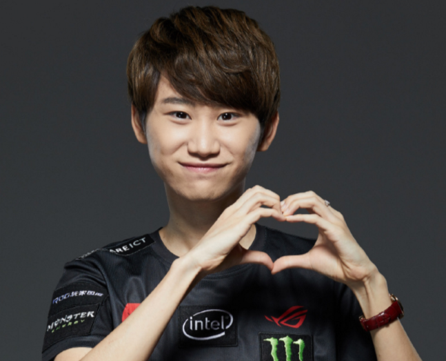
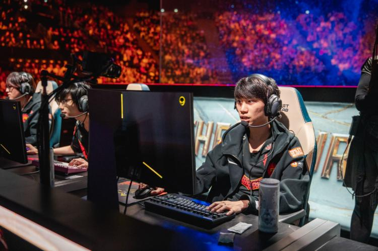
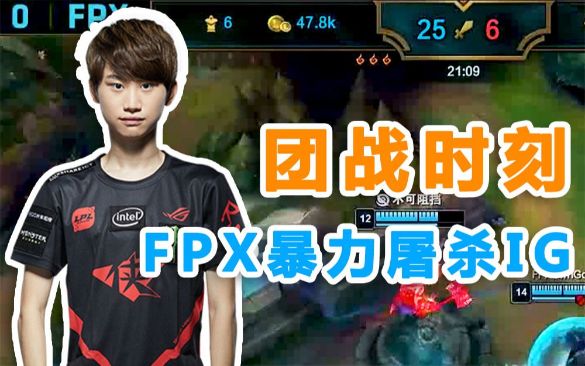

个人简介
金泰相（游戏ID：Doinb），1996年12月30日出生于韩国，司职中单，原QG战队、RW战队选手，现效力于FPX电子竞技俱乐部英雄联盟分部。
电竞生涯
金泰相,在2015年以高分路人身份受邀加入QG战队开始自己的职业生涯，在2015年取得LSPL春季赛冠军，LPL夏季赛亚军；2016年取得LSPL夏季赛冠军；2017年取得LPL春季常规赛MVP ； 在2018年取得LPL春季季军，英雄联盟洲际系列赛冠军；在2019年取得LPL夏季赛冠军及2019英雄联盟全球总决赛冠军。

SorryMaker
2018年洲际赛RW对阵KZ的比赛实在是美好的回忆，那一场比赛中Doinb展示了中单克烈， 在关键的小龙团中，Doinb操刀克烈将KZ众将击溃的场面成为LOL历史上著名场面之一
FPX利用优势开大大龙，RA被迫赶来防守，FPX拿下大龙后选择开团，RA阵容脱节被FPX打出一换五团灭；24分钟，FPX带着大龙buff拿下第四条小龙火龙， 三小龙听牌，转头中下分带推进，Doinb发条塔下完美大招，伤害爆炸，RA三人瞬间被秒，解说当场看傻，FPX顺势一波结束比赛，


职业生涯名场面